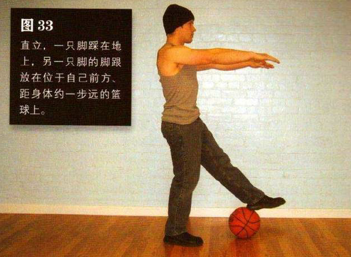
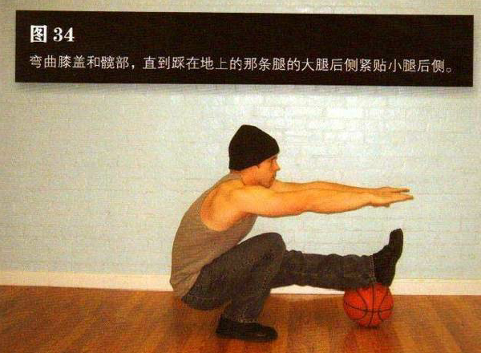

直立，一只脚踩在地上，另一只脚的脚跟放在位于自己前方、距身体约一步远的篮球上。双脚分开，与肩同宽或略宽，双臂在胸前伸直
弯曲膝盖和髋部，直到踩在地上的那条腿的大腿后侧紧贴小腿后侧。这是该动作的最低点。
刚开始练习时，到达最低点后可能出现身体后倾的情况，所以要确保身后有足够的干净空间，这一点对所有全幅深蹲都适用。暂停一下，然后双腿发力把自己推回到起始姿势。在动作过程中，脚跟始终不要抬离地面，身体不要向前摇晃，尽管你可能不自觉地想这样做。切记，要有控制地完成整个动作。
与前几式相比，该动作需要更多的技巧和更大的力量。如果把脚架在篮球上难以保持平衡，那你可以选用稳固的物体（如三块垒起的砖头）代替篮球。如果这样还是有问题，你可以选择降低物体的高度（如一块砖）。随着你的信心与平衡能力的增强，可以逐渐增加物体的高度。
初级标准：1 组，5 次（每侧）
中级标准：2 组，各 10 次（每侧）
高级标准：2 组，各 20 次（每侧）